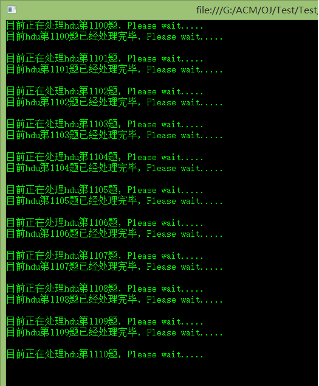
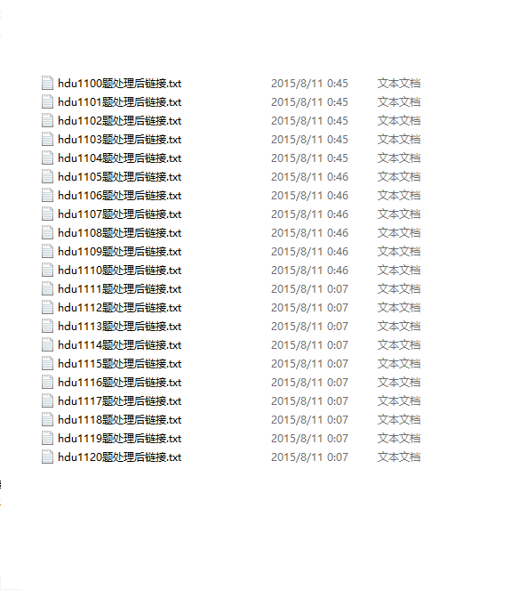
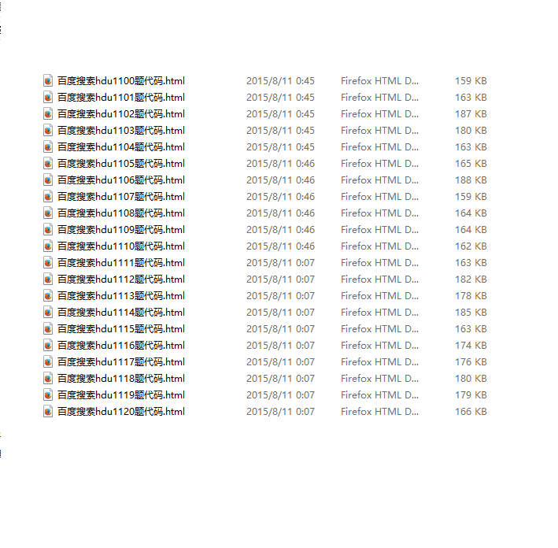

AC自动机之C#网页爬虫1.0(第一天总结)
目前已经有了一个大题思路了，由于晚上的时候兴起想写这么一个程序，然后百度之得：可以实现，遂代码搞起
基本思路：
1、抓取百度的搜索结果，解析网页链接，得到需要跳转的页面
2、然后进一步解析博客等结果页面，抓取代码，保存代码为文件
3、这样就得到了代码，也就实现了AC自动机的第一步，在之后程序中拿这些代码然后自动提交OJ
ok,相关文档后面陆续添加之
PS：第一天写的代码把百度的搜索结果也保存了，第二天的时候把这个保存操作注释掉了，那东西感觉保存下来没什么用，还占地方，最后拿到结果链接就行了。然后添加读入题目范围的操作，其他也都基本没变，代码已更新。
last modified by jtahstu on 2015/8/11 23:13
第一天写的一个简短的代码，可以运行了
using System;
using System.Collections.Generic;
using System.Linq;
using System.Text;
using System.Threading.Tasks;
using System.IO;
using System.Net;
using System.Text.RegularExpressions;
namespace 爬虫 {
class Program {
static void Main(string[] args) {
int st =0;//起始搜索题目
int en = 0;//终止搜索题目
Console.Write("请输入起始搜索题号：");
st = int.Parse(Console.ReadLine());
Console.Write("请输入终止搜索题号：");
en = int.Parse(Console.ReadLine());
for (int k = st; k <= en; k++) {
Console.WriteLine("目前正在处理hdu第{0}题，Please wait.....",k);
System.Net.WebClient client = new WebClient();
string problem = "hdu%20" + k.ToString();
string hproblem = "http://www.baidu.com/s?word=" + problem + "&pn=0";
Stream strm = client.OpenRead(hproblem);
StreamReader sr = new StreamReader(strm);
//不保存百度后的链接，保存那个东西没用
//string file = "百度搜索hdu" + k.ToString() + "题代码.html";
//StreamWriter sw = new StreamWriter(@"G:\ACM\OJ\result\"+file);
string link = "hdu" + k.ToString() + "题处理后链接.txt";
StreamWriter sw2 = new StreamWriter(@"G:\ACM\OJ\link\" + link);
string s = sr.ReadToEnd();
//sw.WriteLine(s);
int index = 0;
for (int i = 0; i < 18; i++) {
string temp = "http://www.baidu.com/link?url";
int start = s.IndexOf(temp, index);
int end = s.IndexOf("\"", start + 5);
string ans = s.Substring(start, end - start);
if (i % 2 == 0) {
sw2.WriteLine(ans);
}
index = end + 5;
}
sr.Close();
//sw.Close();
sw2.Close();
Console.WriteLine("目前hdu第{0}题已经处理完毕，Please wait.....\n",k);
}
//http://www.baidu.com/link?url=ZdN5LcBLNMw4xK45gGwVEq-vyuuKQbXU7CJDF8YQixQbE1VveqWkUhGWUklD91Mcri3Q0gfwPk9fkjIIDnPWXBsfx54Wc9ynaaN0pOteUtS
//System.Net.WebClient client2 = new WebClient();
//Stream page = client2.OpenRead("http://www.baidu.com/link?url=ZdN5LcBLNMw4xK45gGwVEq-vyuuKQbXU7CJDF8YQixQbE1VveqWkUhGWUklD91Mcri3Q0gfwPk9fkjIIDnPWXBsfx54Wc9ynaaN0pOteUtS");
//StreamReader pageer = new StreamReader(page);
//string spage = pageer.ReadToEnd();
//StreamWriter wpage = new StreamWriter(@"G:\ACM\OJ\linkpage\result.html");
//wpage.WriteLine(spage);
//page.Close();
//pageer.Close();
//wpage.Close();
}
}
}
一道题运行时会保存两个文件：1、百度搜索结果页面，2、解析后的链接代码
解析后代码有9个，如下这种形式:
http://www.baidu.com/link?url=vYvYvqzA2XFNoJJudlGF27aAGDANeFJoq4PqrL_iWQUQE-s8lzUsnoU9ynhc8UMVs_puIO98WuuExJJ2sfDXD_
http://www.baidu.com/link?url=52GJT0mmNYcljJN6QKFozmhmoex4F-mAiGr64VwBUTcMv0ymiC4NnkPDk5EzdtFcoMZGZSsJc3BQz6UI6-rT-zLEK6uwEBpwrZpofetlo_u
http://www.baidu.com/link?url=ALsNS2WuqBpGCvbRttZEsoWZwXSPIMaltkNs8bPa4QYKnG6Nlp4LtdCbjJXVfbQAD8bc7e_-5_aRGXIyC0jg6K
http://www.baidu.com/link?url=bqaClQcmmhTLWNOVogmJxdbDg3kKkMPotjpK5no2fqqRfejMqvue58ly1rL4LsxebNyj5pRr8Ph5VxtsL7EVmbbQEG8E1RA8svl1AW-5vH7
http://www.baidu.com/link?url=7wD71YKh9ipX3xiQ7tYJ-Pi9MIdeRLSKv9kPmMVgh27bfFUctDDzR-yN5e0sJJNc3OIShEZPI44L8Nlq98SF_K
http://www.baidu.com/link?url=d2MoBA5YWdAhgrrskwQOOg1GH-oCj64Y25Y-btXuGyyFBaW5r2eOz_OCbay-9vjBbZiub1XZN2f2HGgtDoo_QFXhp_bF9kWVCT2buJGz5Sa
http://www.baidu.com/link?url=Z7WkdQE0_9xpppAOm7R0WANfxX8uVSYLlpullLOs_EkQzi8tl3-cAngu1KegJwlDk0Qgw8Y2HVFgqwIwiweNln-OulphvnLPwhh5X8paPsy
http://www.baidu.com/link?url=3PW9dgcpPEX7F8uAFfMVFqrDs9KQqMUwe2c46iebLpt3B7_I7hIRUpYvIytKy6XqwtMEIdniFLLxg7ylSoU1xq
http://www.baidu.com/link?url=ROUmE9aYwyqYz3TXQuhIXExX_NJq5ccLf_DTTotT2o8wwo5Kv9kU7Ix1OwBsilh2idcHnrbaR6vczABvHDBCp_
运行时的照片：



ok,第一天就是这个样子，明天继续奋斗，继续更新...